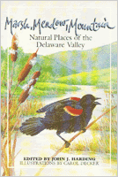

A combination tour guide and ecological primer of the Delaware Valley
A combination tour guide and ecological primer of the Delaware Valley


 A combination tour guide and ecological primer of the Delaware Valley
A combination tour guide and ecological primer of the Delaware Valley

|  |
Marsh, Meadow, MountainNatural Places of the Delaware Valleyedited by John J. Harding, illustrated by Carol Deckerpaper EAN: 978-0-87722-401-3 (ISBN: 0-87722-401-3) |
"The Delaware Valley is one of the most varied environmental drainages in the country. This fascinating and scholarly book by John J. Harding is a must for any nature-oriented reader living along the seaboard."
—Roger Tory Peterson
Stretching from the craggy reaches of the Pocono Mountains to the rolling farmlands of Lancaster County, Pennsylvania, sprawling east across the Delaware River basin and New Jersey�s coastal plain Atlantic beaches—here is a land of rich historical, cultural, and environmental diversity. Few other locales in the United States have as many varied habitats, each with its own distinctive vegetation and wildlife. The nature lover in the Delaware Valley can travel from ocean, across barrier-beaches, salt-water and fresh-water marshes, pine barrens, deciduous woodlands and fields, to mountains, all in a few hours.
Marsh, Meadow, Mountain, a combination tour guide and ecological primer, is written for the thousands of people in the area with an interest in natural history or for those seeking alternative recreational activities. Each chapter, written by an experienced naturalist intimately familiar with one of the seven major ecosystems, introduces the reader to the dynamic interrelationships in nature, the interactions between a particular habitat and its inhabitants, and its plants and wildlife. Over 135 locations are described including the Pocono Mountains, the Pine Barrens, Stone Harbor, Delaware Water Gap National Recreation Area, Ridley Creek State Park, Tyler Arboretum, and Tinicum National Environmental Center, which in any season can provide fascinating viewing opportunities depending upon your interests. Each site also includes addresses, directions, trail maps, artistic drawings, and a suggested reading list.
Marsh, Meadow, Mountain conveys both a sense of fun and learning and, ultimately, will instill in the reader a special intimacy with the Delaware Valley�s precious wild places.
1. The Fresh-Water Marsh – Greg Breese
2. The Eastern Deciduous Forest – John J. Harding and Fred C. Arnold
3. The Pocono Mountains – Larry Rymon and Jacqueline Katzmire
4. The Pine Barrens – Louis Harris
5. The Salt-Water Marsh – Anne Galli
6. The Barrier Beach and Island – D. W. Bennett
7. The Atlantic Ocean – Alan Brady
John J. Harding is co-author with Justin Harding of the widely used guidebook, Birding the Delaware Valley Region (Temple), and is a Doctor of Psychiatry at Temple University Hospital.
© 2015 Temple University. All Rights Reserved. This page: http://www.temple.edu/tempress/titles/376_reg.html.